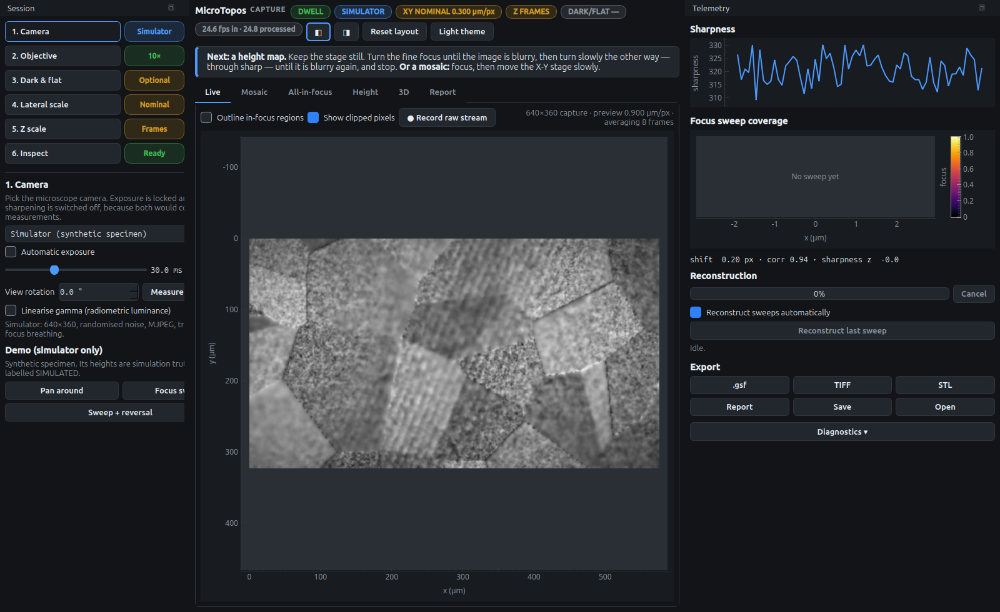
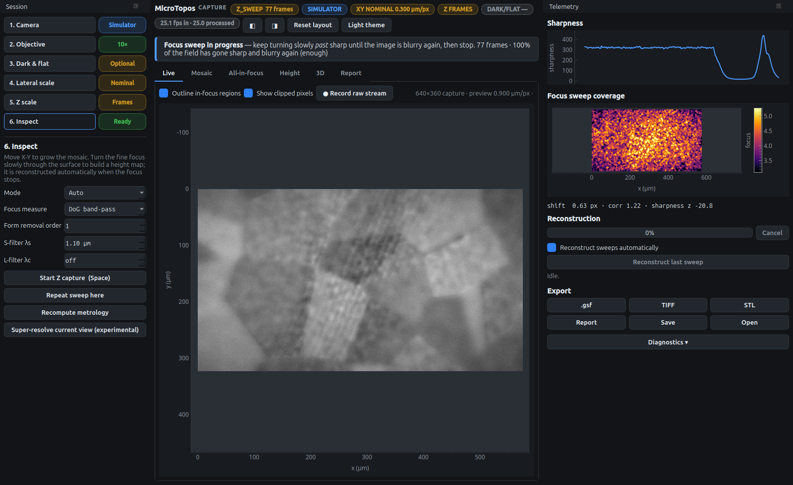
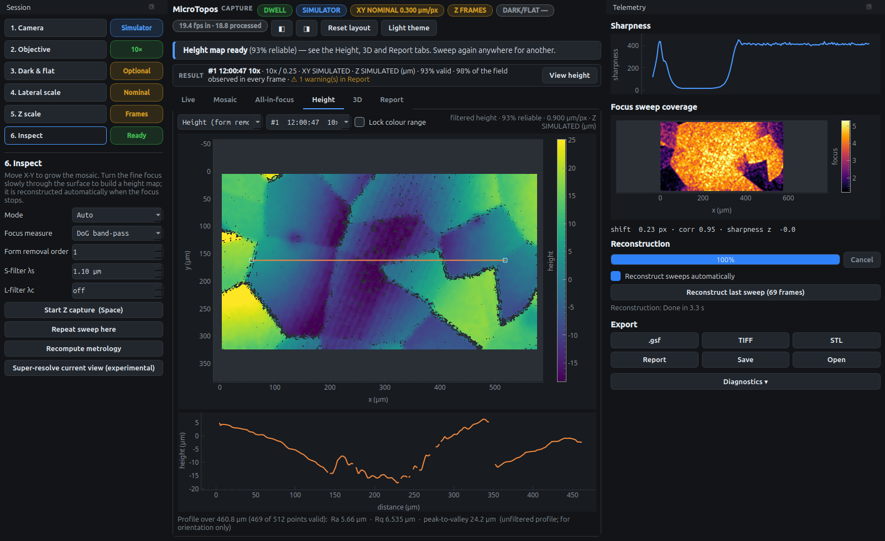
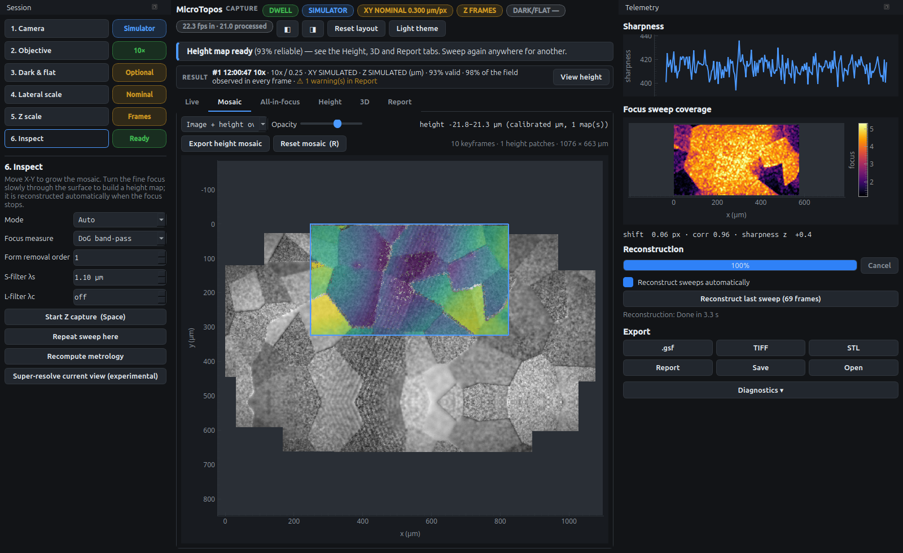

./microtopos-0.8.1-linux-x86_64 --simulator # or: uv run microtopos --simulatorQuick start
The built-in simulator renders a synthetic metal surface with known heights, using the same optics model the measurement relies on. It is the fastest way to learn the program, and everything below works the same with a real camera.
1. Start on the simulator
Start the program with the simulator selected:
On Windows and macOS, start it normally and choose Simulator (synthetic specimen) in step 1. The window has three parts:

-
Left: the checklist. Six steps, each with a status chip. Click a step to open its settings below the list.
-
Middle: the coach line and the views. The blue-edged line above the tabs always says what is happening and what to do next. The status chips in the header show the motion state (
DWELL,PAN,Z_SWEEP), the source, and the X-Y and Z calibration state. -
Right: telemetry. The sharpness trace, the focus-sweep coverage, reconstruction progress and exports.
2. Make a height map
Open step 1, Camera. The Demo box is shown only for the simulator. Click Focus sweep: the simulated focus knob turns from below the surface, through focus, to above it.

Watch three things:
-
the header chip changes to
Z_SWEEPand counts frames; -
the coach line reports how much of the field has gone blurry → sharp → blurry, which must reach 50 %;
-
the Focus sweep coverage map on the right fills in where each pixel has passed through focus.
When the knob stops, the sweep is reconstructed in the background, which takes about 3 seconds here. A notice says when the map is ready. The program stays on the current tab, so open Height yourself:

Hover over the map to read the height under the cursor. Drag the orange line to see a profile. The Report tab lists the roughness parameters, and 3D shows the surface in perspective.
|
Tip
|
The simulator’s heights are simulation truth, so the report labels them SIMULATED. With a real camera, a hand sweep’s heights are relative focus frames until you state that sweep’s knob travel and direction with Set Z… (calibration tutorial). |
3. Stitch a mosaic
Back in step 1, click Pan around. The simulated stage moves in a loop and the program switches to the Mosaic tab. The blue box is the camera’s current field of view.

The height map you just made is pinned to the place where it was measured. Use the menu above the mosaic to choose Image, Image + height overlay or Height only, and the slider to set the overlay’s opacity. Overlapping height maps are levelled to each other and blended.
4. Save your work
-
(Ctrl+S) saves a session: the height map, all-in-focus image, mosaic and report. Open (Ctrl+O) restores it.
-
.gsf opens in Gwyddion; TIFF is a 32-bit float height image; STL is a 3D mesh for printing or CAD; Report (Ctrl+E) writes JSON, CSV and PNG files.